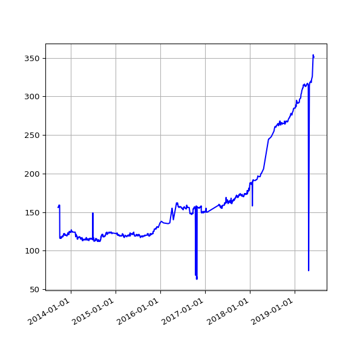

Who is publishing IATI Organisation files?
Checking the IATI Registry for files that have iati-organisations as the root element. IATI Organisation files contain general information about the organisations in the delivery chain.
Count of publishers without an organisation file, over time.
The following publishers do not have an organisation file listed on the IATI Registry.